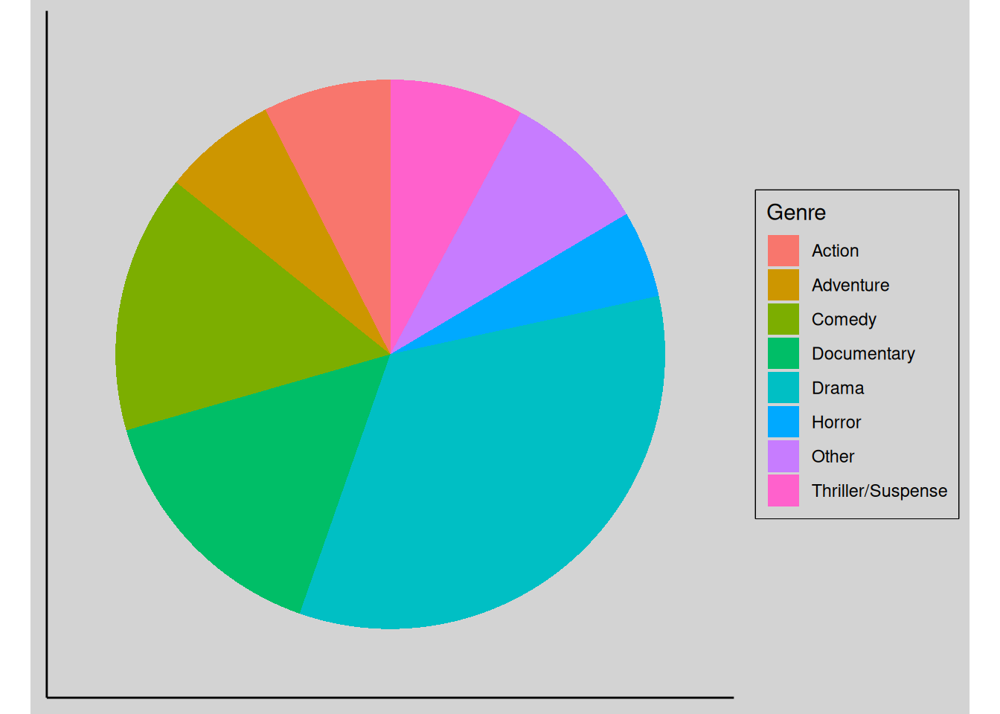

Accelerate into action (movies)
What makes an action movie an action movie? An action movie can be defined as a “a fast-paced, pared down, goal-orientated, narrative structure”.1
Honourable mentions to:
- Viola Davis (Woman King)
- Angelina Jolie (Tomb Raider, Eternals, Salt, etc.)
- Sandra Bullock (Miss Congeniality)
- Jennifer Lawrence (Hunger Games)
- Gal Gadot (Wonder Woman)
Future thoughts …
- Lead roles vs. in the cast
- Director or other roles
- Delve deeper into subgenres:
- Superheroes
- Book-to-movie
- Intersectionality
- Bechdal test
Sources
- IMBD, 2015-03-17
Footnotes
https://researchguides.dartmouth.edu/filmgenres/actionfilms↩︎
the very slight difference between action and adventure is that former is associated with a particular kind of scene or spectacle; whereas the latter implies a story.↩︎